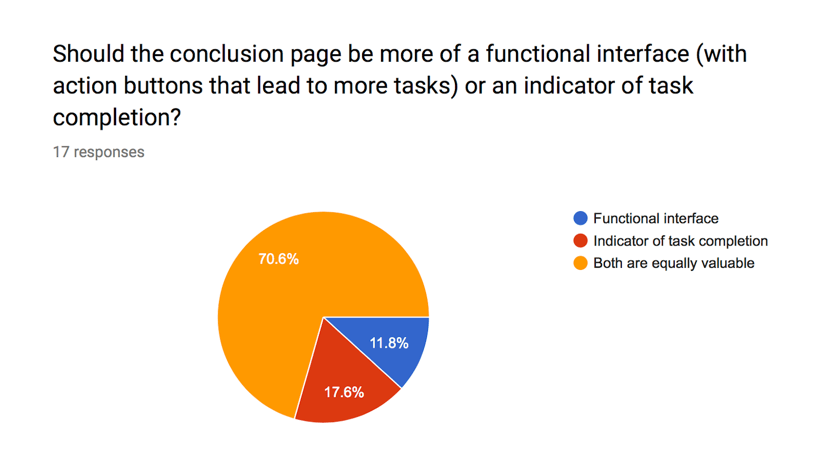
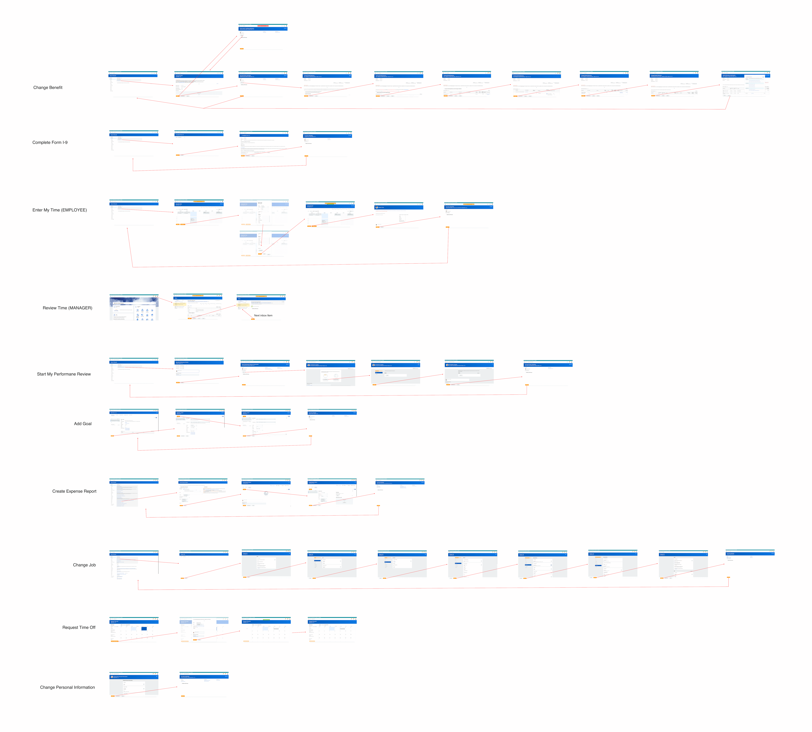
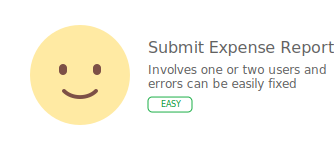
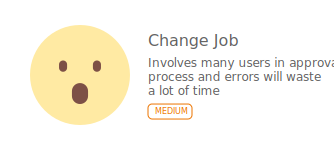
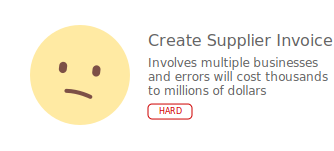

Timeline: Jun - Sep 2018
Employment Type: Internship
My Role: Product Designer
Tools: Sketch, Framer Studio
Skills: Interaction Design, Visual Design
Our PMs and designers felt that the global conclusion page needed improvement. My role was to research and redesign a “lighter” conclusion interface which works with Workday’s 50,000+ business tasks.
Original Design
Our Ireland team shipped a quick-fix design for the recruitment use case right before I started. Recruiters were an edge case because they went through dozens applications a day. They wanted something lighter because the full page conclusion required them to click Done every time, which they felt was tedious.
Recruitment's Conclusion Design
My job was to work backwards from this specific use case and broaden their design to fit the requirements of multiple use cases.
Since the conclusion page was scaled across all of Workday's tasks, I needed quantitative data on how different users interacted with it. Some questions I had:
- How long did users stay on the conclusion page?
- Did users use the related links on the right hand side?
- What do users usually click on this page?
- Where do users navigate to after finishing a BP?
- How many tasks do users typically complete in one sitting?
- Do they expand Details & Process? Is this task specific?
Unfortunately, data science confirmed that analytics was not set up in the conclusion page because of limitations in Workday's tech stack.
I surveyed designers and PMs, asking how their users interacted with the conclusion page. It consisted of open ended questions like: How do you see the current conclusion page being used?
Survey Data
I interviewed designers from different teams and walked through a handful of user flows using preset personas to understand how different users might feel.
Mapping User Flows
Problem Statement: "High volume users feel burdened by a full page conclusion and need a simpler confirmation notice to save time".
My PM and I aligned on these principles for the initial designs:
- Bring the content closer together and emphasize the status in header
- Visually differentiate the conclusion page from the typical Workday page layout
- Show context on the next page in the flow when the user clicks 'Done'
- Test multiple interactions (toast notification, modal)
Paper Sketches
Lofi Wireframes
I brought the designs into office hours to get feedback from the creative directors:
- They liked the modal version the most because it gave context to the page that would appear after clicking “Done”
- Added a checkmark visual for the toast to increase visibility for accessibility users
- Moved the toast to the top center because pages had action buttons on the right
Data science provided the most used tasks on the platform. I categorized them based on how much manual input was required, the time it took to complete, and the business impact of each task. The top tasks for each category would be used for usability testing.
  Versions to test
I recruited 15 users, 5 for each difficulty, and created a testing script. Each user ran through their task 3 times and were either shown the original, slim, or modal conclusion page at the end.
Original Design
Findings for original design:
- First time users thought this was an error page
- Users look at the center (Details and Process) first, not the header on the left hand side
- Majority of user preferred 'Details and Process' to be expanded at default.
- Users said that 'Details and Process' contained a lot of irrelevant information like case #, empty fields, etc
Modal Design
Findings for modal design:
- Users spent less time on this than on the original design
- Navigation friction- users expected the modal to pop up on current page in the flow instead of redirecting to a new page then appearing
- The person directly up next is usually the same person. Users doing medium/hard tasks wanted the entire approval chain
- Easy/medium users didn't click View Details. Users doing the hard task did
Slim Design
Findings for slim design:
- Every participant expanded the notification
- Users spent the least time on this design
- Users doing the hard task wanted a link to the confirmation details
- Users wanted the notification to stay until an action is taken (rather than time based)
I presented the research to our Ireland team and a group of internal recruiters, who added that it's important to not only see who's directly up next, but who's after that and maybe even the third approver. The highlights of the next iteration were to:
- Show the entire business approval chain to prelude the following steps
- Increase visual salience of completion icon
- Link to the confirmation receipt, which is sent to the archive mailbox
- Have the notification expand on hover to speed up the interaction
- Remove 'Do Another' and 'Related Links' because users didn’t use it
Next Iteration (Mutt)
I tested both the Mutt and the original design on 10 new users (script here). My goal was to see how users reacted to the emphasis on the business approval chain in the latest iteration.
Unfortunately, my internship came to an end before I could test this design on more use cases. I wasn't confident that the Mutt design could scale to work for all of Workday's business processes since I only tested it on 3 tasks.
One design would not work for all use cases because the tests suggested that the user's investment towards the conclusion page correlated with the task difficulty. The more difficult and high impact the task was, the more likely the user would double check the submission details, thus needing a more data dense conclusion page.
I proposed to have 2 versions of the conclusion component. A full page conclusion for more complex tasks and a slim version for easier tasks. The complexity is measured by the amount of time it takes to complete the task, the number of stakeholders involved, and the business impact.
The trade off with this approach is to sacrifice the comfort of a universal component for 2 components that fulfill the same need in one design system. This gives our designers the flexibility to create a more custom experiences but might be jarring to users because they won't know which conclusion design to expect.

While I was redesigning the conclusion page, I also worked on mobile
animations with Framer.js.
View Case Study
EventQR
A web app that lets users create & scan events encrypted into a QR code, which can be synced onto their Google Calendar.

Birch Aquarium
Designing an exhibit in the Birch Aquarium at the Scripps Institution of Oceanography to teach people about bubbles.